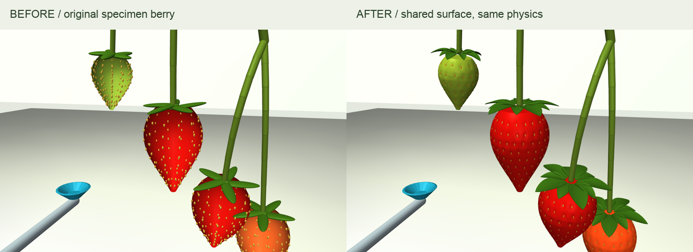

Better berries. The same complete plant.
The berries now have shallow achene depressions, embedded seeds and leaflike calyx geometry. This is the full specimen and its original contact-driven recovery experiment—foliage, fruit branches and neighboring berries included.
This recording uses the existing load–hold–withdraw experiment and its relaxing-material hypothesis. It is not a harvest, a new PPO result or a demonstration of the new net/cutter physics.

What carries over
Full plant topology and all existing contact geometry; settled pose; fruit COM/inertia; stalk and leaf stiffness/damping; the original recovery law and its recorded internal state.
Exact model comparison · Fresh paired contact checkWhat this does not establish
Dimples and seeds are sub-millimetre appearance detail. They do not change the rigid fruit collision envelope or simulate flesh indentation. Cutting, net deformation and bruising remain separate, unfinished physics components.
Provenance and next workReference used for surface and calyx
Cal Poly Strawberry Center: fruit anatomy. The photographs inform structure; our pit depth, seed size and calyx dimensions are visual hypotheses, not measurements of that specimen.